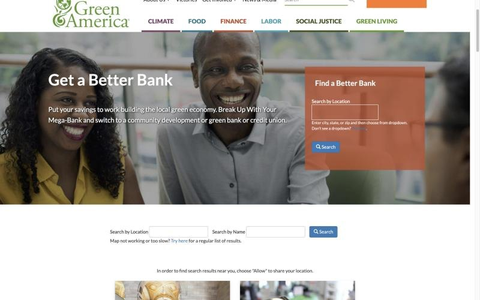
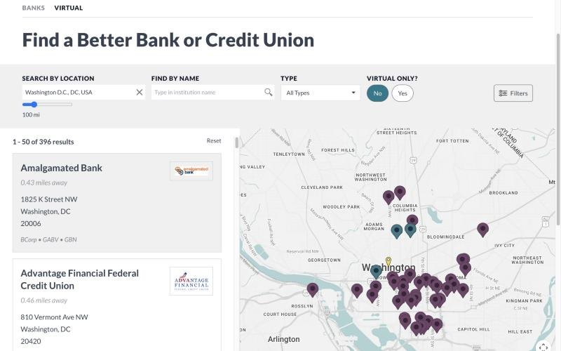
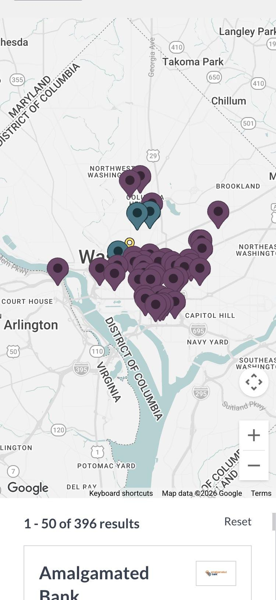
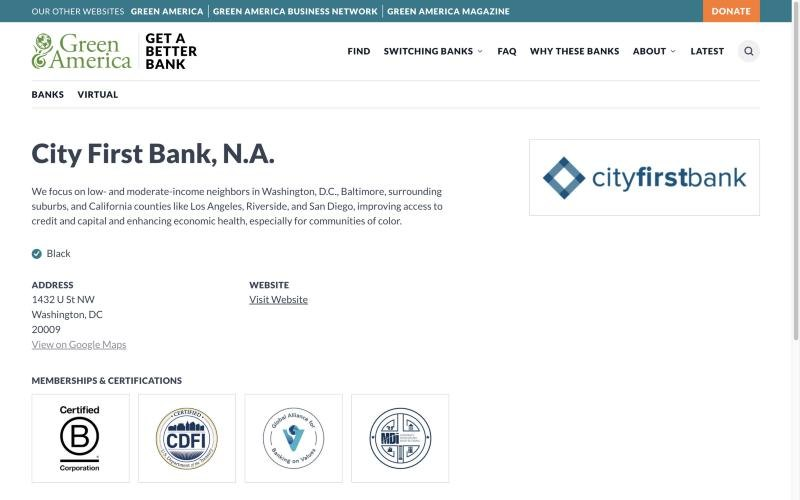

Get a Better Bank
From an unreliable map to a nationwide banking directory
I led Get a Better Bank from concept through launch: a standalone directory of more than 3,000 banks and credit unions across 17,000+ locations. I helped define the scope, made the case for a higher upfront investment, and finished the remaining data work when a contractor left a week before launch.
The starting point
When I joined Green America in 2019, its banking campaign relied on a map embedded in the organization’s Drupal website. The tool helped people find alternatives to banks financing fossil fuels, but it had a basic problem: not every institution in the database appeared on the map.
For the campaign director, that meant a tool central to her program couldn’t reliably show people their options.
First, make the existing tool work
The original map used Drupal’s Geolocation module. It held thousands of institutions, but couldn’t display them all at once.
I moved the dataset to Google My Maps. Banks appeared in one color and credit unions in another. It was a simple solution, but every institution showed up. We used it for several years.
When a new campaign director joined, she proposed taking the next step: giving the directory its own website. Together, we began defining what that product needed to do.

The decisions behind the build
Choosing the higher upfront cost
The program director and I wrote the request for proposals together. It specified WordPress and a particular plugin for the bank data. Most firms proposed building to that specification.
One firm recommended a different approach: keep the institution data in a Google Sheet and feed it into the website through an API. They showed us examples of sites they had built this way. Their quote was three times our budget.
I recommended that approach to leadership. Staff would be able to update the data themselves, the directory could accommodate more institutions, and we could expand it without rebuilding the site. My case was that the higher initial investment would cost less to maintain over time.
The fundraising team secured a grant to cover the difference. The resulting build let us launch with more than 3,000 institutions and gave the campaign team a way to maintain the directory without depending on a developer for data updates.
Deciding what belonged in the first release
As we planned the product, the inclusion criteria expanded. Alongside Community Development Financial Institution–certified institutions and fossil-fuel-free banks, we considered women-owned banks, minority depository institutions, low-income designated credit unions, and members of the Global Alliance for Banking on Values.
Each category meant more data to verify and more information to explain to users.
I pushed us to agree on the criteria for the first release. The architecture could support additional categories later; we needed to launch with a dataset we could verify and maintain. That gave us a boundary for the work rather than an open-ended list of additions.
Closing the gap before launch
A week before launch, the data contractor left. I took over his remaining work, learned the data pipeline, and finished what was needed to get the site ready.
We launched on April 2, 2025, meeting the grant deadline.
What launched
Get a Better Bank became a standalone directory with location search, filters, and profiles for banks and credit unions across all 50 states, Washington, DC, and Puerto Rico.
The campaign team could maintain the institution data in a Google Sheet rather than ask a developer to update the website.


Results at a glance
What the usage tells us
The directory is intended to help people find a bank or credit union and take the next step. We couldn’t see whether someone opened an account, so I used outbound clicks as a practical indicator.
From September 2025 through early November 2026, the site recorded more than 4,000 outbound clicks. Of those, 89% went to a bank or credit union website or to directions to a branch, spanning more than 1,300 institutions.
The core directory had an 83% engagement rate from April 2025 through October 2026. Users of that page viewed it about five times each.
Traffic sources told a different story from the headline visit count. Paid advertising brought about half the sessions, but engagement from those visits was low. Sessions from email, organic search, and referrals had a combined engagement rate of 71%.
That distinction matters: total traffic alone didn’t tell us whether people were using the tool. Directory use and click-throughs to institutions were more informative.
Reporting periods: directory engagement, April 2025–October 2026; outbound clicks, September 2025–early November 2026.
A product the campaign could keep using
U.S. News referenced the directory in its sustainable-banking guide, and Bill McKibben endorsed it. The site continued receiving traffic and investment after launch.
Just as importantly, the campaign team could add institutions without developer help. That was a central reason for choosing the build.

What I’d do differently
Make approvals part of the schedule
We met the grant deadline, but the project took six months rather than the three originally planned. Decisions about content, inclusion criteria, and design took longer than expected.
Next time, I’d establish who approves each decision and when it is needed, then make the effect of a delayed approval visible in the schedule.
Define the outcome measure before launch
We didn’t configure outbound clicks as a conversion metric before launch. I had to reconstruct the outcome analysis afterward from the available analytics.
For a similar product, I’d agree on the success measure and confirm the tracking before release—not leave it until we wanted to evaluate the results.
Require shared documentation earlier
The data pipeline depended on one contractor and wasn’t documented. When he left, I had a week to learn it and complete the remaining work.
I’d require shared documentation and a handover process for critical systems from the beginning, rather than wait until the end of the engagement.